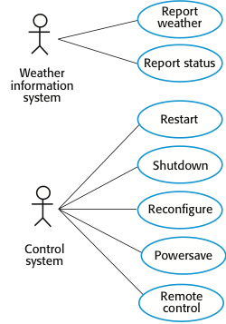
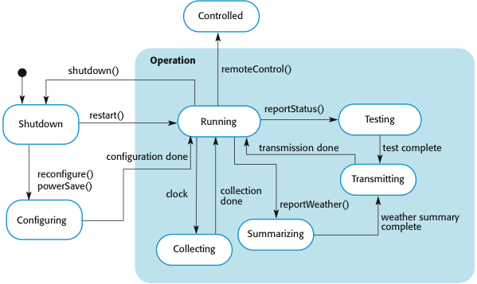

CS 410/510 - Software Engineering
Design and Implementation
Reference: Sommerville, Software Engineering, 10 ed., Chapter 7
The big picture
Software design and implementation is the stage in the software engineering process at which an executable software system is developed. Software design is a creative activity in which you identify software components and their relationships, based on a customer's requirements. Implementation is the process of realizing the design as a program. These two activities are invariably inter-leaved.
In a wide range of domains, it is now possible to buy commercial off-the-shelf systems (COTS) that can be adapted and tailored to the users' requirements. When you develop an application in this way, the design process becomes concerned with how to use the configuration features of that system to deliver the system requirements.
Object-oriented design using the UML
Structured object-oriented design processes involve developing a number of different system models. They require a lot of effort for development and maintenance and, for small systems, this may not be cost-effective. However, for large systems developed by different groups design models are an important communication mechanism. Common activities in these processes include:
System context and interactions
Understanding the relationships between the software that is being designed and its external environment is essential for deciding how to provide the required system functionality and how to structure the system to communicate with its environment. Understanding of the context also lets you establish the boundaries of the system. Setting the system boundaries helps you decide what features are implemented in the system being designed and what features are in other associated systems.
A system context is a structural model (e.g., a class diagram) that demonstrates the other systems in the environment of the system being developed.
An interaction model is a dynamic model (e.g., a use case diagram + structured natural language description) that shows how the system interacts with its environment as it is used.

| System | Weather station |
| Use case | Report weather |
| Actors | Weather information system, Weather station |
| Description | The weather station sends a summary of the weather data that has been collected from the instruments in the collection period to the weather information system. The data sent are the maximum, minimum, and average ground and air temperatures; the maximum, minimum, and average air pressures; the maximum, minimum, and average wind speeds; the total rainfall; and the wind direction as sampled at five-minute intervals. |
| Stimulus | The weather information system establishes a satellite communication link with the weather station and requests transmission of the data. |
| Response | The summarized data is sent to the weather information system. |
| Comments | Weather stations are usually asked to report once per hour but this frequency may differ from one station to another and may be modified in the future. |
Architectural design
Once interactions between the system and its environment have been understood, you use this information for designing the system architecture. You identify the major components that make up the system and their interactions, and then may organize the components using an architectural pattern (e.g. a layered or client-server model).
Identifying object classes is often a difficult part of object oriented design. There is no 'magic formula' for object identification. It relies on the skill, experience and domain knowledge of system designers. Object identification is an iterative process. You are unlikely to get it right first time. Approaches to object identification include:
Design models
Design models show the objects and object classes and relationships between these entities. Static models describe the static structure of the system in terms of object classes and relationships. Dynamic models describe the dynamic interactions between objects.
Subsystem models show logical groupings of objects into coherent subsystems. These are represented using a form of class diagram with each subsystem shown as a package with enclosed objects. Subsystem models are static (structural) models.
Sequence models show the sequence of object interactions. These are represented using a UML sequence or a collaboration diagram. Sequence models are dynamic models.
State machine models show how individual objects change their state in response to events. These are represented in the UML using state diagrams. State machine models are dynamic models. State diagrams are useful high-level models of a system or an object's run-time behavior.

Interface specification
Object interfaces have to be specified so that the objects and other components can be designed in parallel. Designers should avoid designing the interface representation but should hide this in the object itself. Objects may have several interfaces which are viewpoints on the methods provided. The UML uses class diagrams for interface specification but Java may also be used.
Design patterns
A design pattern is a way of reusing abstract knowledge about a problem and its solution. A pattern is a description of the problem and the essence of its solution. It should be sufficiently abstract to be reused in different settings. Pattern descriptions usually make use of object-oriented characteristics such as inheritance and polymorphism.
Design pattern elements:
Example: the Observer pattern
| Pattern name | Observer |
| Description | Separates the display of the state of an object from the object itself and allows alternative displays to be provided. When the object state changes, all displays are automatically notified and updated to reflect the change. |
| Problem description | In many situations, you have to provide multiple displays of state information, such as a graphical display and a tabular display. Not all of these may be known when the information is specified. All alternative presentations should support interaction and, when the state is changed, all displays must be updated. This pattern may be used in all situations where more than one display format for state information is required and where it is not necessary for the object that maintains the state information to know about the specific display formats used. |
| Solution description | This involves two abstract objects, Subject and Observer, and two concrete objects, ConcreteSubject and ConcreteObject, which inherit the attributes of the related abstract objects. The abstract objects include general operations that are applicable in all situations. The state to be displayed is maintained in ConcreteSubject, which inherits operations from Subject allowing it to add and remove Observers (each observer corresponds to a display) and to issue a notification when the state has changed. The ConcreteObserver maintains a copy of the state of ConcreteSubject and implements the Update() interface of Observer that allows these copies to be kept in step. The ConcreteObserver automatically displays the state and reflects changes whenever the state is updated. |
| Consequences | The subject only knows the abstract Observer and does not know details of the concrete class. Therefore there is minimal coupling between these objects. Because of this lack of knowledge, optimizations that enhance display performance are impractical. Changes to the subject may cause a set of linked updates to observers to be generated, some of which may not be necessary. |
Reuse
From the 1960s to the 1990s, most new software was developed from scratch, by writing all code in a high-level programming language. The only significant reuse or software was the reuse of functions and objects in programming language libraries. Costs and schedule pressure mean that this approach became increasingly unviable, especially for commercial and Internet-based systems. An approach to development based around the reuse of existing software emerged and is now generally used for business and scientific software.
Levels of reuse:
Costs of reuse:
Configuration management
Configuration management is the name given to the general process of managing a changing software system. The aim of configuration management is to support the system integration process so that all developers can access the project code and documents in a controlled way, find out what changes have been made, and compile and link components to create a system. Configuration management activities include:
Host-target development
Most software is developed on one computer (the host, development platform), but runs on a separate machine (the target, execution platform). A platform is more than just hardware; it includes the installed operating system plus other supporting software such as a database management system or, for development platforms, an interactive development environment (IDE). Development platform usually has different installed software than execution platform; these platforms may have different architectures. Mobile app development (e.g. for Android) is a good example.
Typical development platform tools include:
Open source development
Open source development is an approach to software development in which the source code of a software system is published and volunteers are invited to participate in the development process. Its roots are in the Free Software Foundation, which advocates that source code should not be proprietary but rather should always be available for users to examine and modify as they wish. Open source software extended this idea by using the Internet to recruit a much larger population of volunteer developers. Many of them are also users of the code.
The best-known open source product is, of course, the Linux operating system which is widely used as a server system and, increasingly, as a desktop environment. Other important open source products are Java, the Apache web server and the mySQL database management system.
A fundamental principle of open-source development is that source code should be freely available, this does not mean that anyone can do as they wish with that code. Typical licensing models include: